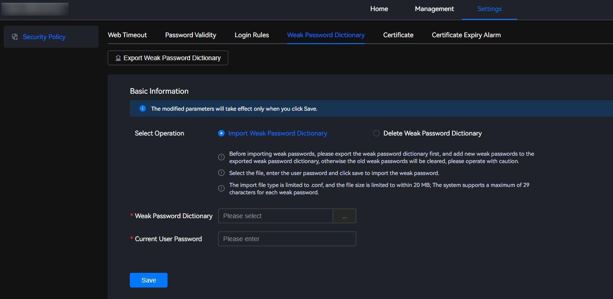
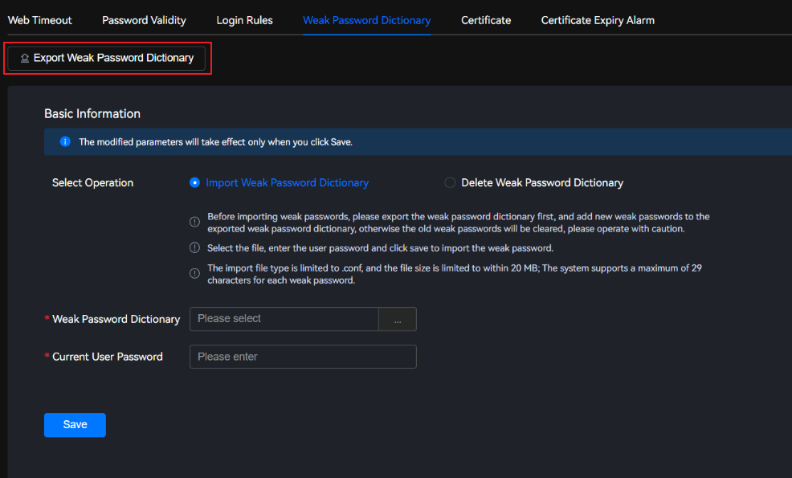

Importing a Weak Password Dictionary
- Choose Settings > Security Policy > Weak Password Dictionary.Figure 1 Weak password dictionary
 - Click Import Weak Password Dictionary.
- Before importing a weak password dictionary, export the existing dictionary first and add new weak passwords to it. Otherwise, the old weak passwords will be cleared. Exercise caution when performing this operation.
- Select a file, enter the user password, and click Save to import the weak password dictionary.
- Only .conf files can be imported, and the file size cannot exceed 20 MB. Each weak password can contain a maximum of 29 characters.
- Click
 on the right of Weak Password Dictionary and select a file to be uploaded.
on the right of Weak Password Dictionary and select a file to be uploaded. - Upload a file.Figure 2 Importing the weak password dictionary


- Only one configuration file can be imported at a time.
- The imported file will overwrite the current weak password dictionary.
- To retain the weak password dictionary configuration, export the existing weak password dictionary and add new weak passwords.
- Each weak password rule contains a maximum of 30 characters and does not support Chinese characters.
- In the Current User Password text box, enter the password of the current user.
- Click Save.
A message is displayed in the upper right corner of the page, indicating that the weak password dictionary is imported successfully.
Exporting a Weak Password Dictionary
- Choose Settings > Security Policy > Weak Password Dictionary.Figure 3 Weak password dictionary
- Click Export Weak Password Dictionary to save the weak password dictionary of the current system to the local PC.Figure 4 Exporting the weak password dictionary

Deleting a Weak Password Dictionary
- Choose Settings > Security Policy > Weak Password Dictionary.Figure 5 Weak password dictionary
- Click Delete Weak Password Dictionary.
- Deleted passwords cannot be retrieved. Exercise caution when performing this operation.
- Enter the user password and click Save to delete the existing weak passwords.
Figure 6 Deleting a weak password dictionary
- In the Current User Password text box, enter the password of the current user.
- Click Save.
A message is displayed in the upper right corner of the page, indicating that the weak password dictionary is deleted successfully.